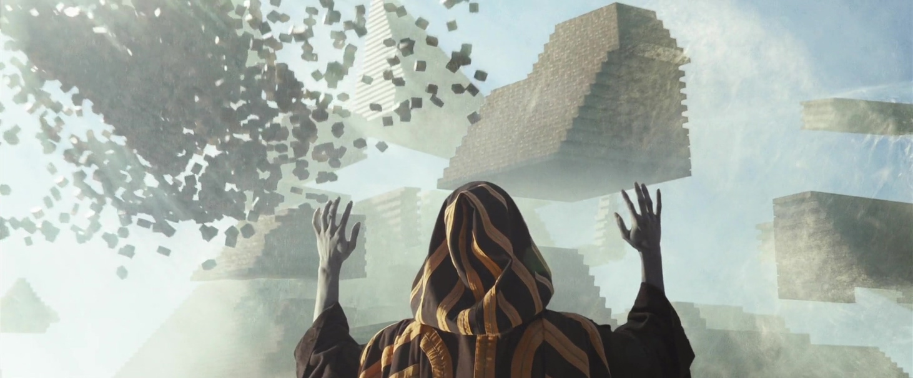
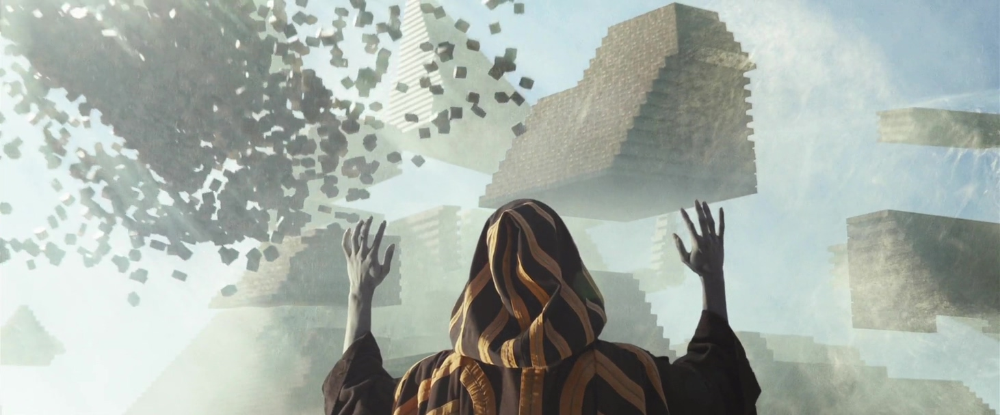

«문명의 패턴», «세계사 2» 225×285mm, 유광코팅, 양장제본
←
Patterns of Civilization, WORLD HISTORY 2
자비에 영재 학교에서 물리학 다음으로 등장한 수업은 역사입니다.
칠판에 그려진 로마 타임라인은 이들이 역사수업을 듣고 있음을 짐작하게 합니다. 수업 장면에서 표지와 책등이 같이 노출된
두 권의 책을 발견했습니다. 발견한 책들은
책등을 통해 두 권의 제목을 유추해낼 수 있었습니다. 빨간색 책은 «WORLD HISTORY 2», 초록색 책은 «Patterns of Civilization»입니다. 두 책은 한가지 색으로 배경이 깔리고, 표지 상단에 중앙 정렬로 쓰인 제호, 그 밑에 바로 이미지가 삽입된 공통의 형식을 갖고 있음을 알 수 있었습니다.
두 권의 제목을 아마존에 검색하자, ‘프렌티스 홀(Prentice Hall)’에서 1993년에 출판된 버튼 F. 비어스의
«WORLD HISTORY: Patterns of Civilization»라는 교사용 연수 교재를 찾을 수 있었습니다. 중앙 정렬된 제호나 크게 삽입된 이미지는 영화에서 발견한 책과 상당히 비슷합니다. 프렌티스 홀은 6-12학년 및 고등 교육 시장을 위해 인쇄물 및 디지털 콘텐츠를 발간하는 교육 출판사로, 중등 교육부(Secondary Education Division)와 고등 교육부(Higher Education Division)로 나뉘어 책을 출판하고 있었습니다. 서로 분리된 중등 교육부와 고등 교육부의 사이트에서는 과목별로 여러 교과서를 볼 수 있었지만, 두 곳 모두 ‘WORLD HISTORY 2’와 ‘Patterns of Civilization’로 검색되는 책은 찾을 수 없었습니다. 긍정적인 정보를 얻기가 어려운 와중에 책을 재현하는데 가장 혼란을 주는 부분은
책등입니다. 서로 닮아있는 두 책은 언뜻 시리즈처럼 보이지만, 책등에서는 서로 긴밀한 관계의 시리즈로는 엮여있지 않다고 말하고 있습니다. 카메라와 가까이 있는 «Patterns of Civilization»을 기준으로 «WORLD HISTORY 2»과 비교해보겠습니다.
«Patterns of Civilization»의 책등
가장 상단에는 희미한 텍스트가 있지만 빨간색 책등에서는 보이지 않습니다. 책의 제목은 같은 방법으로 기록되어 있습니다. 그다음은 넘버링인데 초록색 책은 Volume 1이 적혀져 있는 것으로 보아 긴밀한 관계로 엮인 시리즈 책은 Volume 2,3순으로 정렬됨을 예상할 수 있지만 빨간색 책은 ‘Volume’이라고 보기에는 어려운 긴 텍스트에 원형의 그래픽이 그려져 있습니다. 넘버링 다음으로 책의 출판사처럼 보이는 프렌티스 홀(Prentice Hall)은 두 권의 책 모두 같은 방법으로 기록되어 있습니다. 요소들이 서로 다른 상황에서 각자의 책에서 발견된 요소는 최대한 존중하여 재현하기로 합니다. 이 두 권은 서로 어떤 차이점을 갖고 있기에 책 등에 요소들이 제각각이고, 어떤 관계를 형성하고 있기에 하나의 수업에서 동시에 발견된 걸까요?
프렌티스 홀의 고등 교육부 사이트의 역사 교재 목차페이지 안에서 ‘World History: Volume 1/Volume 2’라는 카테고리를 발견했습니다. 카테고리 안에서 «WORLD HISTORY 2»는 발견되지 않았지만 프렌티스 홀에서 Volume 1은 고대부터 1500년도까지의 이야기(The Great Traditions: From Ancient Times to 1500)를, Volume 2에서는 1500년도 이후의 이야기(The Modern Centuries: From 1500 to the Present)를 다루고 있음을 알게 됐습니다. 이를 증명하면서도 영화에서 발견한 표지의 형식과 상당히 비슷한
«DOCUMENTS in World History Volume 1: The Great Traditions: From Ancient Times to 1500»과 «DOCUMENTS in World History Volume 2: The Modern Centuries: From 1500 to the Present»를 발견했지만, 비슷한 표지의 책은 6번째 개정판으로 2011년도에 출간되었기 때문에 2000년도에 개봉한 엑스맨에서 발견한 책을 재현하는 데에 참고하긴 어려웠습니다. 개정하기
이전의 책들에서도 영화에서 발견한 책과 비슷한 표지를 가진 책은 찾을 수 없었습니다.
만약 «WORLD HISTORY 2»가 Volume 2의 내용을 다루고 있지만, 시대를 구분하는 넘버링 Volume보다 더 큰 개념의 시리즈에도 포함되어 있어서 그 또한 넘버링을 해야 했다면 중복의 문제를 피하고자 Volume 2가 ‘제목 2’로 변경되고 더 큰 개념의 시리즈는 원형의 그래픽에 번호로 넘버링 한 것은 아닌지 추측해볼 수 있습니다. 이러한 추상적인 추측을 어느 정도 뒷받침해주는 책으로 프렌티스 홀에서 2007년에 출간한 두 권의 책이 있습니다.
«WORLD HISTORY»와 «WORLD HISTORY: THE MODERN ERA»인데요. 프렌티스 홀에서 «WORLD HISTORY»는 세계사를 전체적으로 설명하는 책이며, «WORLD HISTORY: THE MODERN ERA»는 현대 세계사에 대한 심화 교육 과정의 필요를 충족시키기 위해 따로 제작된 책이라고 설명하고 있습니다. 두 권의 책은 프렌티스 홀의 ‘세계사 프로그램’을 위한 책으로, ‘세계사 프로그램’은 학생들이 역사에 대한 지식을 현재 사고에 적용하도록 고무시키고, 세계사에 대해 학습함으로써 학생들은 현재와 미래의 세계를 이해하는 데 필요한 지식을 개발할 수 있도록 하는 프로그램입니다. «WORLD HISTORY»와 «WORLD HISTORY: THE MODERN ERA»는 두 권의 책이 세계사 프로그램으로 세트처럼 엮인다는 점과 빨간색과 초록색의 표지, 한 권은 세계사 전체를, 다른 한 권은 현대사를 집중적으로 다룬다는 점에서도 영화에서 발견한 두 권의 책과 비슷한 구석이 있다고 볼 수 있습니다.
프렌티스 홀에서 ‘세계사 프로그램’의 가장 오래된 기록은 2007년으로 나와 있지만, 만약 2000년도 이전부터 진행하고 있던 프로그램이라고 한다면 충분히 «WORLD HISTORY 2»는 ‘세계사 프로그램’ 시리즈에 포함되어 넘버링 될 수 있으며, «Patterns of Civilization»은 문명화 역사에 대한 심화 교육용 교재로 존재한다고 이해할 수 있습니다. 따라서
스톰은 로마 역사에 관한 수업을 진행하며 현대 세계사를 얘기하는 «WORLD HISTORY 2»와 문명화에 대해 얘기하는 «Patterns of Civilization»을 역사 수업의 교재로 사용할 수 있습니다. 재현될 책의 제목 서체는
«Patterns of Civilization»의 책등을 통해 힌트를 얻을 수 있습니다.
‘C’는 알파벳의 머리 쪽 세리프가 길게 내려와 있으며, 하단은 세리프가 없이 마무리된 특징이 보입니다. ‘i’는 머리가 되는 원과 기둥 사이의 간격이 가까워 사이의 간격이 거의 보이지 않는 특징을 보입니다. 그리고 이 둘이 붙어서 쓰이는 경우 ‘C’의 머리 쪽 세리프가 ‘i’ 기둥의 가장 윗부분까지 내려오는 것을 볼 수 있습니다. 이러한 특성이 드러나는 서체로 Georgia를 선택했습니다. 시리즈로 엮인 듯한 «WORLD HISTORY 2»도 같은 서체로 재현했습니다.
표지 중앙에 삽입된 이미지는 아마존에서 검색된 ‹WORLD HISTORY: Patterns of Civilization›를 참고하여 선정할 수 있습니다. «WORLD HISTORY: Patterns of Civilization»에 삽입된
이미지는 1851년에 헨리 코트니라는 화가가 빅토리아 여왕이 영국의 만국박람회에 방문한 것을 기념하여 그린 그림입니다. 만국박람회(World Exhibition)란 각 나라의 문화와 정보를 교환하는 장으로, 과학기술의 발달과 함께 1569년 독일 뉴렌베르크 시청에서 개최된 박람회를 시작으로 산업 박람회들이 열렸지만, 근대적 의미에서 최초의 엑스포는 1851년 영국 런던에서 개최된 만국박람회가 꼽힙니다. 런던 만국박람회는 빅토리아 여왕 시대 대영제국의 영화를 대표하기 위해 석재나 벽돌을 전혀 쓰지 않고 유리와 철제 보와 기둥만으로 수정궁(Crystal Palace)을 건설하였습니다. 영국의 주요 동기는 “업계 지도자의 역할을 세계에 분명히 알리는 것”이었습니다. 실제로 앨버트 왕자는 “생산력은 경쟁과 자본의 자극에 결정된다.”라고 말한 바 있습니다*«서쪽의 문명 Vol.3»피어슨 교육, 마크 슐란스키·패트릭기어리·패트리샤 오브라이언, 1788.. 수정궁의 주재료인 판유리는 약 1.2m인데, 이 유리는 프랑스의 기술자들을 끌어들여 버밍엄에서 생산한 다음 런던으로 운송하여 철물과 함께 조립되었습니다. 수정궁은 생산 체제를 본격적으로 적용한 물량 공세와 식민지의 조직적인 노동 분업을 바탕으로 건설된 수정궁은 산업혁명의 발상지인 영국의 위상을 보여주며 근대 건축의 시작을 알리는 건축물이라고 할 수 있습니다 *«수정궁의 역사와 묘사와 1851년 세계 산업 박람회 Vol.1» 케임브리지 대학, 존 탈라스, 2011.. 만국 박람회에서는 영국뿐 아니라 호주, 인도, 뉴질랜드 등의 제국 식민지와 덴마크, 프랑스, 스위스 등의 외국에서도 참가하여 총 13,000건의 전시가 열렸습니다. 런던 만국박람회는 자유 무역을 축하하며, 문명화가 덜 된 국가들에 우호적인 경쟁을 도모하여 문명과 진보를 발생시킨 전시회라고 말할 수 있습니다. 따라서 런던 만국박람회의 그림은 ‘문명의 패턴(Patterns of Civilization)’을 대표하는 이미지라고 말할 수 있습니다. 하지만 장면 속 의 책등에는 Volume 1이 적혀져 있기 때문에, 만국박람회는 1851년의 사건으로 고대부터 1500년도까지의 이야기를 다루는 Volume 1의 교과서에 삽입되기에 시대적으로 적절하지 않음을 알게 되었습니다.
«WORLD HISTORY: Patterns of Civilization»는 새로운 개정판임을 알리는 ‘UPDATED EDITION’이 금색의 상자 안에 적혀있습니다. «Patterns of Civilization»도 표지에 노란색의 상자가
그려져있는 것을 볼 수 있습니다. ‹엑스맨: 최후의 전쟁›에서는 찰스 자비에가 아인슈타인이 돌연변이라는 가능성을 얘기하기도 했고, ‹엑스맨: 퍼스트 클래스›에서는 에릭이 케네디 대통령이 돌연변이었다는 가능성을 얘기하기도 합니다. 문명화에서 크게 영향을 끼친 과거의 인물이 돌연변이라는 사실에 의해 역사를 수정한 개정판은 아니었을까요?
이를 뒷받침 하는 예로 ‹엑스맨: 데이즈드 오브 퓨처패스트›에서
어린 앤 사바누르가 자신의 능력을 이용해
피라미드를 건설하는 장면을 언급할 수 있습니다. 인간을 초월한 능력을 갖추고 있는 앤 사바누르가 인류로부터 신으로 숭배받으며 인류를 도와 문명을 세우는 장면입니다.
앤 사바누르는 고대에 나타난 최초의 뮤턴트로 ‘육체전이’라는 특별한 초능력을 갖고 있어서 이전의 육체에 지니고 있던 능력을 새로운 육체에 축적해 복수의 초능력을 가질 수 있는 인물입니다. 영화 ‹엑스맨: 아포칼립스›는 앤 사바누르가 기원전 3500년의 이집트 문명을 다스리다가 그가 거짓된 신이라고 주장하는 세력들에 의해 깊은 지하 속에 봉인되어 수천 년이 지난 1983년도에 눈을 뜨게 되는 내용입니다. ‹엑스맨: 아포칼립스›에서 역사 수업을 가르치고 있던 스톰은 1983년에 앤 사바누르와 함께 엑스맨을 공격하다가 나중에는 어린 엑스맨들을 도와 앤 사바누르를 물리치며 찰스 자비에 영재학교로 들어가 엑스맨으로 성장한 인물입니다. 이집트의 문명을 세운 앤 사바누르의 곁에서 지낸 스톰이 새로 개정된 역사 교재로 수업하고 있을 가능성을 생각해볼 수 있습니다.
앤 사바누르는 고대 이집트 시대
‘라’라는 태양신으로 칭송받았습니다. 태양의 신인 라는 팔콘의 머리와 코브라 안의 태양 디스크를 머리에 두고 있는 모습으로 등장합니다. ‹엑스맨: 아포칼립스›에서 이집트 시대의 앤 사바누르는
새 머리 모양의 금 갑옷을 착용하고 있습니다. 당시 이집트 인들은 창조되는 모든 것은 태양의 일이며, 모든 형태의 삶은 라에 의해 만들어졌다고 믿었습니다. 라가 하늘을 건너는 태양의 배에 올라타 동쪽에 있는 땅의 신 게브에게서 서쪽에 있는 하늘의 신 누트에게 가는 것을 탄생과 죽음, 낮과 밤의 흐름이라고 생각했습니다*«이집트의 신들과 여신들의 사전» 하트 조지, 루트리지 앤 케간 폴 잉크, 1986..기원전 2686년 부터2181년인 이집트 제2 왕조 시기에는 파라오가 자신을 ‘라의 아들’이라고 부르기도 했습니다*«학생들을 위한 신화 : 그리스, 이집트, 노르웨이» 크레이그 위트 모어, 룰루, 2011.. 라는 제5 왕조 시기에 국가의 신으로 등극하여 이집트 내에서 엄청난 숭배를 받았으며, 고대 이집트 미술에서 무덤이나 사원 등의 유물에서 영원의 삶을 염원하는 상징물로써 자주 등장했습니다. 기원전 1000년경, 고대 이집트의 나일 강 상류에 자리 잡은 테베스라는 도시에서는 돌이나 나무로 만들어진
비석에 태양신의 상징을 숭배하는 모습이 묘사된 장례식 가구에 라가 등장합니다. 기원전 1069~30년경 파라오 왕조 때의 유물로 추정되는 나무 비석에는 떠오르는 낮의 태양을 상징하는 라와 저녁의 태양을 상징하는 아툼에게 기도하는 타 페레라는 고인이 그려져 있습니다. 라의 태양 디스크에서 꽃의 광선이 흘러나와 타 페레의 얼굴을 비추고 있으며, 타 페레의 뒤에 그려진 상형 문자는 인간이 영원한 생명을 얻을 수 있는 주문을 의미합니다. 이는 타 페레 라는 고인이 태양의 영원한 순환과 매일의 부활을 신과 함께하고자 하는 소원을 염원하고 있음을 알 수 있습니다*«타 페레의 비석» 조르주 폰세, 루브르 박물관, 2008.. 따라서 최초의 돌연변이인 앤 사바누르의 존재가 밝혀지면서 과거의 문명화에 대한 새로운 역사가 쓰였다는 추측을 통해 의 표지에는 당시 태양신으로 숭배받았던 앤 사바누르가 그려진 고대 이집트인의 비석 이미지를 삽입하기로 했습니다. 프렌티스 홀에서는 교사용 연수 교재(ANNOTED TEACHER’S EDITION)를 책등 가장
상단에 ‘TE’로 표시하고 있기 때문에 책등에서 발견된 요소는 개정판을 알리는 ‘UPDATED EDITION’은 ‘UD’로 적히게 됩니다.
«WORLD HISTORY 2»에 삽입될 이미지를 추론하기 위해 1500년 이후의 세계사에서 엑스맨 세계관과 연결지을 수 있는 사건을 찾아보기로 했습니다. 하지만 ‹엑스맨: 데이즈드 오브 퓨처패스트›에서 울버린이 1973년으로 돌아가 미래를 바꿨기 때문에 엑스맨 내의 역사와 현실 세계에서의 역사 사건을 정확히 비교하며 공통점을 찾는 데에 어려움이 있다고 생각했습니다. 두 권의 책이 프렌티스 홀에서 발견한 ‘세계사 프로그램’에 포함되는 책이라고 추론한 점을 고려해보기로 했습니다. 프렌티스 홀에서 제시하고 있는 ‘세계사 프로그램’의 목적을 이미지를 추론해 내는 데 참고할 수 있습니다. ‘세계사 프로그램’은 학생들이 역사에 대한 지식을 현재 사고에 적용하도록 고무시키고, 세계사에 대해 학습함으로써 학생들은 현재와 미래의 세계를 이해하는 데 필요한 지식을 개발할 수 있도록 하는 프로그램이라고 언급한 바 있습니다. 자비에 영재학교의 설립 이념은 공존과 평화이며, 엑스맨 영화에서는 자유를 얻으려면 싸워 쟁취해야 한다는 매그니토와 힘을 지배하지 못하면 지배당한다고 주장하는 찰스 자비에 간의 대립이나 돌연변이와 인간과의 갈등을 통해서도 두 세력 간의 공존과 평화에 대해 윤리적인 물음을 꾸준히 던지고 있습니다. 엑스맨: 최후의 전쟁에서는 찰스 자비에가
돌연변이 윤리학이라는 수업을 진행하는 장면이 등장하기도 합니다.
기존의 세계사에서 두 세력이 세력 간의 권리를 원인으로 갈등하게 되는 상황과 그 결과를 암시해볼 수 있는 사건을 찾아보기로 했습니다. 검색 결과로 1789년에 일어난 프랑스 혁명을 찾을 수 있었습니다.. 프랑스 혁명은 프랑스의 구체제(앙시엥 레짐)에 불만을 느끼고 있던 평민들이 1789년에 봉기하여 발생하게 된 자유주의 혁명입니다. 혁명의 결과는 유럽과 세계 역사에서 정치권력이 소수 왕족과 귀족에서 일반 시민에게 옮겨지는 역사의 전환점을 제시했습니다*«현대 세계의 역사» R.R. 팔머·조엘 콜튼·로이드 크레이머, 맥 그로우 힐, 1978.. 1875년에 프랑스 정부는 미국 독립전쟁 지원 등으로 발생한 파산 위기 상황에서 평민들에게 부당한 세금을 거두기 시작했고, 이는 부르주아를 포함해 시민의 불만을 극에 달하게 했습니다. 결국, 부르주아들은 국왕과 귀족에 맞서 따로 국민의회를 구성하여 새로운 헌법을 제정하는 일에 착수했지만 이에 국왕은 군대를 동원해 무력으로 국민의회를 진압하려 들게 되면서 파리 시민까지 봉기하게 되었습니다. 시민은 혁명을 시작하기에 앞서 필요한 탄약을 탈취하기 위해 1789년 7월 14일에 절대 왕정을 비판하는 정치범들을 투옥하는 절대주의의 상징인 바스티유 감옥을 습격하게 됩니다. 이것이 프랑스 혁명의 시작인
바스티유 감옥 습격 사건입니다. 시민들은 바스티유 감옥 전체를 장악했고 결국 바스티유 감옥은 함락되었습니다*«시민 : 프랑스 혁명의 연대기» 사이먼 쉐마, 펭귄, 2004.. 바스티유 함락 사건 이후, 국민의회는 1789년 8월 4일에 귀족의 봉건적 특권이 폐지되었음을 선언하고, 8월 26일에는 새 헌법의 정신과 혁명의 이념이 담겨있는
‘인간과 시민의 권리선언’을 선언했습니다*«근대의 탄생» 브리태니커 편찬위원회, 아고라, 2014..
프랑스 혁명은 구제도의 불평등한 관습을 깨뜨리고 시민계급이 정치권력을 장악한 가장 전형적인 시민 혁명으로 평가되고 있습니다. 프랑스 혁명이 갖는 가장 큰 의의는 혁명의 구호로 내걸었던 자유·평등·박애의 이념이 근대 이후의 역사에서 가장 중요한 가치로 인식되었으며, 세계의 모든 국가가 각국의 역사적 상황에 따라 프랑스 혁명의 이념인 자유와 평등을 실현하도록 했다는 점입니다. 즉 프랑스 혁명은 모든 구별이나 차이를 넘어선 모든 사람의 자유를 뜻하는 자유, 법적인 평등에서 나아가 사회적이고 경제적인 평등을 포함하는 평등, 나아가 세계 평화의 이념인 우애의 이념을 내걸고 민주주의와 자본주의로의 길을 열었다고 말할 수 있습니다*«프랑스 혁명과 근대성의 탄생» 페렌츠 페헤르, 캘리포니아 대학, 1990..
18세기 프랑스 사회와 엑스맨 영화 속 사회는 상당히 비슷한 대립 구조를 이루고 있습니다. 인간으로서 동등한 권리를 요구하고 있는 평민과 돌연변이들은 그렇지 않은 귀족과 인간에게 불공평함을 역설하며 권리를 얻기 위해 투쟁을 하기도 합니다. 엑스맨 영화 시리즈 초반에는 돌연변이 등록 법안을 추진하려 하는 로버트 켈리와, 이를 반대하는 진 그레이의 갈등25은 프랑스 정치가 샤를 알렉상드르 드 칼론이 특권계층에게도 세금을 부과하자는 개혁안을 제시하였지만, 특권계층은 개혁안을 거부하고 자신들의 특권을 지키려 한 역사적 사례와도 비슷한 모습을 하고 있습니다. 이에 분노한 부르주아 계급이 국민 의회를 구성하는 사례 또한, ‹엑스맨: 데이즈드 오브 퓨처패스트›에서 돌연변이를 말살하려는 계획을 알고 분노한 매그니토가 방송을 통해 숨어지내는 돌연변이들에게 혁명의 메시지 “돌연변이 형제자매들에겐 이 말을 전하겠다. 숨어 사는 것은 끝났다. 고통도 끝났다. 너희는 너무나 오랜 세월 어둠 속에서 굴욕과 공포 속에 살았다. 이제 나와라. 나와 손잡고, 우리 종족의 미래를 위해 함께 싸우자. 새로운 내일이 바로 오늘 시작된다”를
전하는 장면이 대표적인 예입니다.
폭력성을 띤 혁명을 주장하는 매그니토와 인간과의 공존과 평화를 주장하는 찰스 자비에와의 이념 사이에서 자비에 영재학교의 어린 돌연변이들은 엑스맨 세계관 속 돌연변이와 인간 간의 고조된 갈등 관계를 묘사하는 듯한 역사적 사례를 학습함으로써 현재와 미래의 세계를 이해하고 자신의 힘을 어떻게 사용할지 선택하는 데에 도움을 얻을 수 있습니다. 따라서 «WORLD HISTORY 2»에는 프랑스 혁명의 시작을 알리는 바스티유 감옥 습격 사건의 이미지를 삽입하기로 했습니다.


 


 출처: http://www.islamophobiatoday.com/2013/11/06/florida-parents-protest-textbook-with-chapter-about-islam/
출처: http://www.islamophobiatoday.com/2013/11/06/florida-parents-protest-textbook-with-chapter-about-islam/